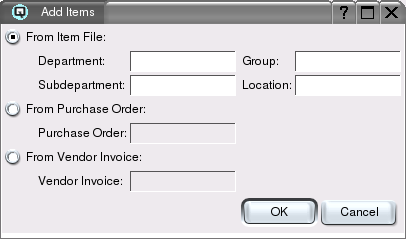
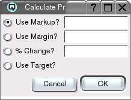

Price Batch Master
The selling prices for one or multiple items can be changed in a batch. The
batch must be executed for the prices to take effect. Executed batches are
stored as inactive for future reference. You may add items manually to the
batch, or you may select the items from a department, sub-department, item
group, location, purchase order or vendor invoice. You can calculate the new
selling price of all items in the table by clicking on the ``Calculate''
button. The new price can be calculated using markup, margin, a percentage
increase or the items target margin. After calculating the new prices you
can round them using your rounding rules. Rounding rules must be setup in
your Quasar Configuration screen for the store. Click on "Round" on the
right hand side to round your prices. Next, after calculating new
prices and rounding them you may execute the batch to put the new prices in
effect or you may choose to file the batch and execute it at a later
date. Price labels may also be generated from the price batch.

Price Change Table
-
- Item Number - The item number of each item.
- Description - The description of the item.
- Size - The size of the item.
- Cost - Displays the costs from the item master file,
unless a purchase order was selected. If a purchase order was selected
then the cost prices are displayed as per the landed cost in the purchase
order.
- Price - The old prices as they exist prior to having
the prices set.
- New Price - The new prices of the items. This can be
entered manually or calculated using the use calculate button.
Add Items

Click on the add items button to display the add items table
-
- Department - Select or enter a department and add all items
within it. You can add several departments by choosing one department at at
time.
- Sub-department - Select or enter a sub-department and add all
items within it. You can add several sub-departments by choosing one
sub-department at at time.
- Group - Select or enter an item group and add all
items within it. You can add several groups by choosing one
group at at time.
- Location - Select or enter a location and add all
items within it. You can add several locations by choosing one
location at at time.
- Purchase Order - Select or enter a purchase order and add all items within it to the
price change table. If this option is selected the new selling
prices will be calculated based on the landed cost prices in the purchase order
itself. The landed cost includes charges such as freight and fees.
- Vendor Invoice - Select or enter a vendor invoice and add all items within it to the
price change table. If this option is selected the new selling
prices will be calculated based on the cost prices in the vendor invoice
itself. The landed cost includes charges such as freight and fees.
Clear Items
Select to clear all items on the list.
Calculate

Calculates the new selling prices. You may calculate the new selling
prices by selecting one of the following:
Use Markup?
Calculates the selling price by marking the price
up from cost by the entered amount. For example, marking up an item
that costs $1.00 by a 50% markup will set the new selling price to
$1.50.
Use Margin?
Calculates the selling price so that the desired
margin of profit is achieved. For example, to achieve a 50% margin
of profit on an item that costs $1.00 the selling price will be set
to $2.00.
% Change
Calculates the selling price based on a percentage
change from the current price. Entering a positive percentage change
will increase the price by that percentage. Entering a negative
percentage change will decrease the selling price by that percentage.
Use Target
Calculates the selling price of each item based on
its target margin.
Round
Click on the round button to round your prices based on your rounding
rules defined in Quasar Configuration.
Print
Click on the print button to print a preliminary copy of your price change.
Labels
Click on the labels button to print shelf labels for all of the items in
the price batch.
Execute
Click on the execute button to execute the batch. The prices do not take
effect until the batch is exectuted.